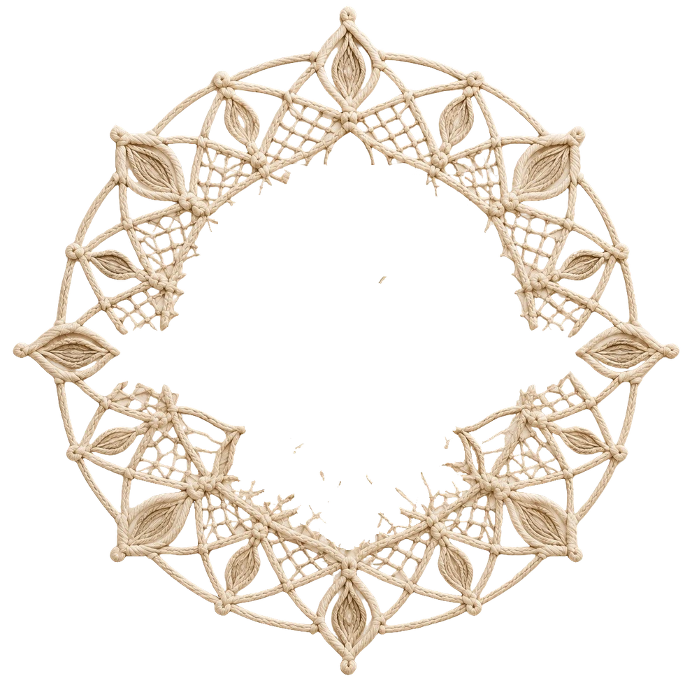
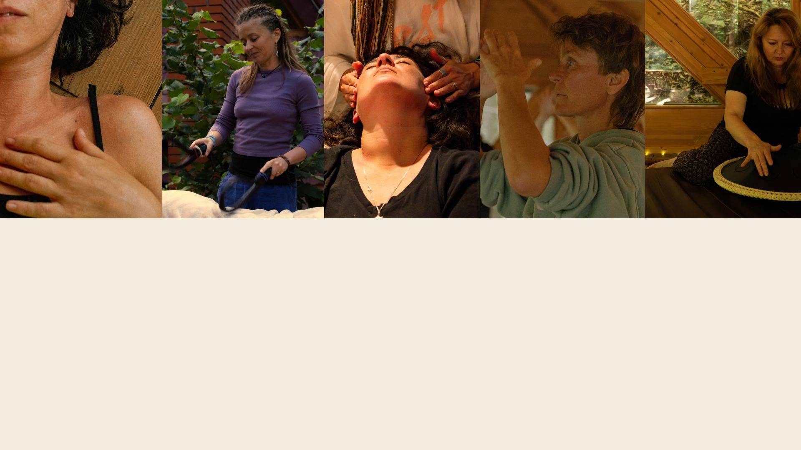
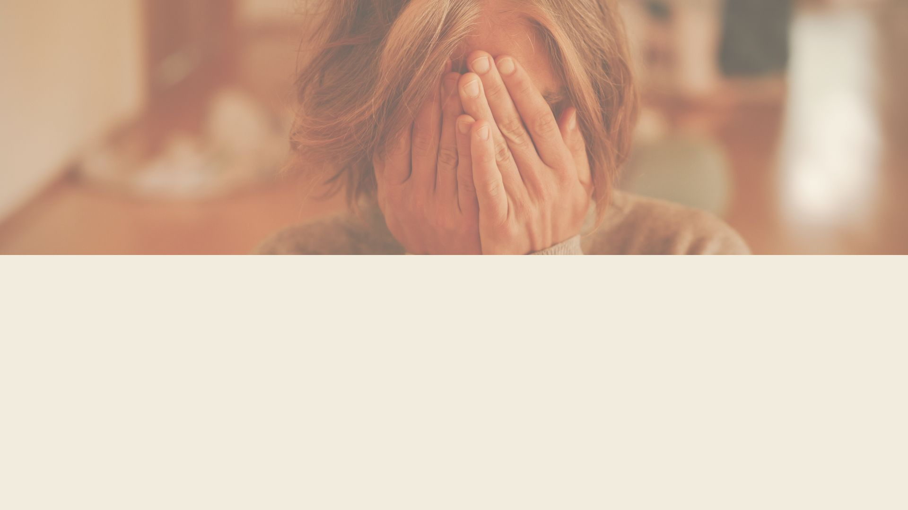
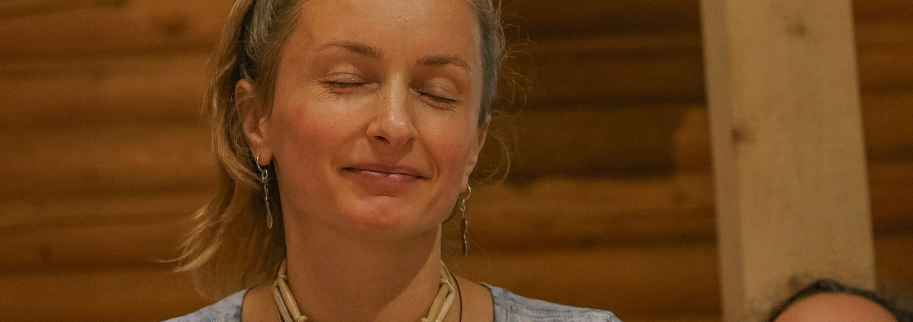

PORTRAIT / 001
МІСЦЕ ДЛЯ ФОТО
ІСТОРІЯ УЧАСНИЦІ
Для тих, хто поруч з іншими
Мереживо об'єднує жінок, які підтримують інших під час війни в Україні.


OUR TOOLSМереживо унікальне завдяки тим, хто в ньому зібрався. У нашій спільноті багато фахівчинь, і кожна має свою сильну практику: тілесна терапія, психологія, робота з нервовою системою, малюнок, голос, музика.
Тому кожна зустріч і кожен ретрит складаються в особливий набір інструментів, який більше ніде не повториться.
І в цьому наша особливість: жінка тут не лише віддає, а й отримує турботу. Ті, хто звик підтримувати інших, відновлюються тими самими практиками, якими діляться самі.



Українські психологині та терапевтки різних напрямів працюють там, де йдуть обстріли. Вони підтримують мешканців міст під ударами, ветеранів, родини, які втратили близьких на війні.
Це непроста робота, і її дуже багато: часто без вихідних, нерідко на волонтерських засадах, при організаціях. Багато хто не може вирватися навіть на кілька днів.
Така професія зараз потребує величезних ресурсів і підтримки. Проте вона лишається в тіні, бо поруч завжди є наче важливіші проблеми. А насправді на плечах цих фахівчинь тримається дуже багато.
Тому їм самим потрібен простір, де можна відновитися: поговорити з тими, хто розуміє, поділитися болем, просто помовчати. Відчути опору і знати, що ти потрібна й важлива, навіть коли нічого не робиш.

Кожен ретрит потроху повертає чутливість і сили. Він дає змогу прожити важкий період у підтримувальному оточенні й не залишатися з цим наодинці. Навіть коротка поїздка допомагає берегти фізичне та психічне здоров'я.
Для тих, хто залишився в країні й проживає війну зсередини, такі простори особливо важливі.
Є жінки, які щодня підтримують інших. Вони допомагають пережити втрати, знаходять рішення, слухають, захищають, організовують і залишаються поруч.
Але тим, хто підтримує інших, теж потрібні увага, відпочинок і простір для відновлення. Мереживо створює таку можливість — через спільноту, взаємну підтримку та турботу.
Як це працює↗Не лише те, що вони роблять для інших. А й те, ким вони є.
Тут з'являтимуться особисті історії учасниць, їхні голоси, досвід і моменти, якими вони захочуть поділитися.
ІСТОРІЯ УЧАСНИЦІ
СПІЛЬНІ МОМЕНТИ
Простір відновлення в Карпатах для жінок, які підтримують інших під час війни в Україні.
А хто ще допоможе тим, хто допомагає?
Safe Home Ukraine — це можливість на певний час зупинитися, побути в безпечному середовищі, відчути підтримку та відновити сили.
Учасниці отримують безкоштовне проживання й харчування, практичну та психологічну підтримку, травма-інформовані практики, терапію за потреби та можливість відновлюватися через природу й спільноту.
Підтримка Мережива допомагає створювати й зберігати простір, у якому жінки можуть відновлюватися, знаходити опору та продовжувати важливу роботу для інших.
Незабаром тут з'явиться інформація про перевірені способи підтримати проєкт.
ІНФОРМАЦІЯ ПРО ВНЕСКИ — НЕЗАБАРОМ